Everything to do once, in order: install the server, make it reachable, point it at your code, pair your phone, and give the worker access to GitHub.
The app does nothing on its own. The mobile app is a remote control for the Anton server — every session, file, ticket and PR lives on a computer you run. Install the server first; the app has nothing to connect to until you do.
On the Mac that holds your code. One line picks the build for your chip, verifies
it, installs Anton.app and launches it:
curl -fsSL https://saadhu-xyz.github.io/install.sh | bashAnton now lives in your menu bar, and runs all three services for you. Everything below starts from that menu. Then install the mobile app from the downloads.
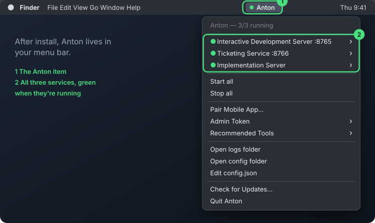
Anton runs your local CLIs rather than calling any AI provider directly. Recommended Tools in the menu ticks what's installed; click anything missing to open its download page, then Re-check. Claude Code is the one you can't skip — the menu warns you until it's found.
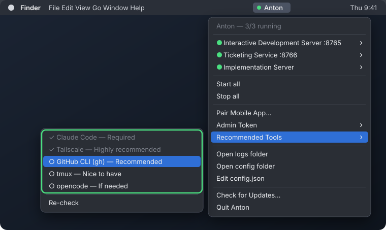
Once GitHub CLI is installed
(brew install gh), sign it in once so Claude can open PRs for you:
gh auth loginHighly recommended. Without it, your phone can only reach your Mac while both are on the same Wi-Fi. Install Tailscale on the Mac and on your phone, and sign both in to the same account — Anton then works from anywhere, with no port forwarding and nothing exposed to the internet.
Do this before pairing: the pairing QR includes your Mac's Tailscale address, so the app keeps working once you leave home.
Each service has a web dashboard. Open one from its submenu — Interactive Development Server → Open dashboard in browser for settings and devices, Ticketing Service → Open dashboard in browser for tickets and workers.
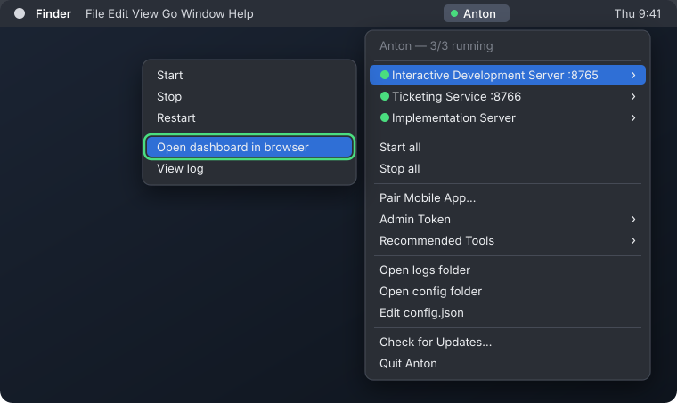
http://127.0.0.1:8765/dashboard/ and
http://127.0.0.1:8766/dashboard/, if you'd rather bookmark them.
Both need the admin token to change settings and manage workers. Copy it from Admin Token → Copy admin token:
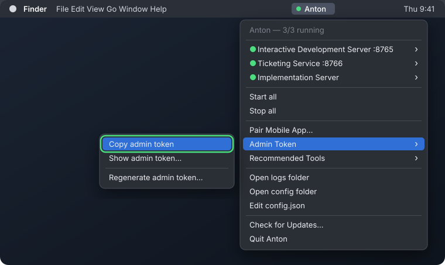
In the Tickets dashboard, go to Settings, paste it under Admin token and click Save token. The settings dashboard asks for the same token with an Enter token button. Each browser remembers it, so it's once per computer — treat it like a password.
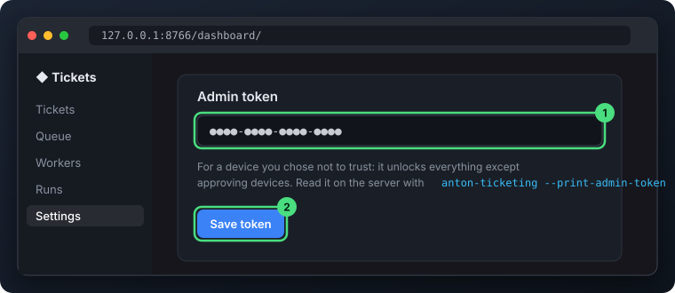
Anton works inside one project folder — every subfolder is a project in the app. It
starts at ~/AntonProjects; point it at the folder where you already keep
your repos so they show up straight away.
In the settings dashboard (:8765), under Service Configuration,
set Work dir to the full path and click Save changes:
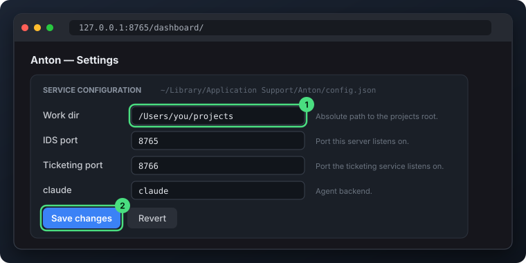
Then open the menu and click Apply & restart all services:
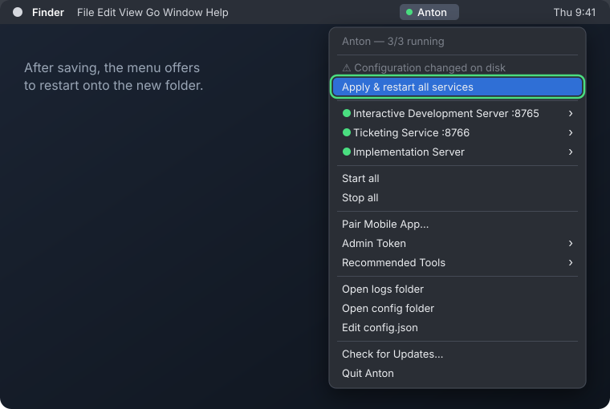
Click Pair Mobile App… in the menu and scan the QR from the app. Your phone then shows a six-character code while it waits to be approved.
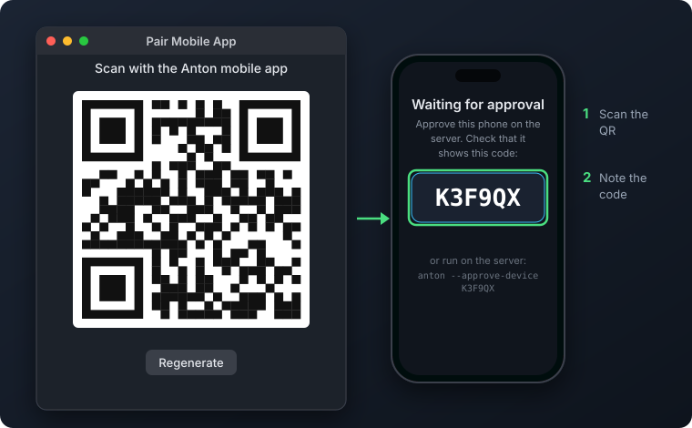
The waiting phone appears at the top of the Anton menu (and as a notification). Click it and approve — only if the code matches the one on your phone.
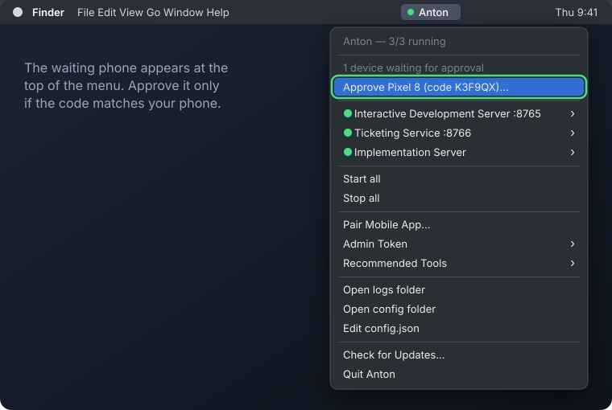
The worker clones, branches and pushes with its own SSH key, not yours. Until GitHub knows that key, every ticket fails at the clone.
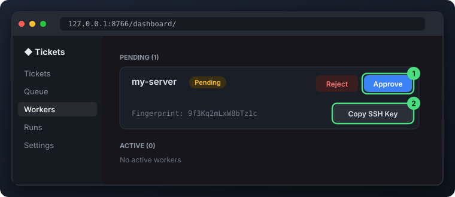
git@github.com:you/repo.git.On the machine that holds your code — ideally one you leave running. One line installs all three services as systemd user units; no root needed:
curl -fsSL https://saadhu-xyz.github.io/install-linux.sh | bashSay yes when it asks about starting at boot, so Anton keeps running after you log out. It finishes with your dashboard links, admin token and pairing QR — the install section has the details. Then install the mobile app from the downloads.
Anton runs your local CLIs rather than calling any AI provider directly, so these
need to be on the server's PATH. The installer checks for them and
offers to install Claude Code, Tailscale and gh; pass
--install-deps to install whatever's missing without asking.
claudeClaude Code — every session runs through itrequiredgitProjects, branches and worktreesrequiredtailscaleReach Anton from your phone anywherehighly rec.ghGitHub CLI — PRs and repo access for workersrecommendedtmuxAttach to sessions from a terminalnice to haveopencodeAlternative coding agentif neededSign gh in once so Claude can open PRs for you:
gh auth loginHighly recommended. Without it, your phone can only reach the server while both are on the same network. With Tailscale on the server and the phone, signed in to the same account, Anton works from anywhere — no port forwarding, nothing exposed to the internet.
curl -fsSL https://tailscale.com/install.sh | sh
sudo tailscale upDo this before pairing: the pairing QR includes the server's Tailscale address, so the app keeps working once you leave home.
Each service has a web dashboard. In a browser on the server:
http://127.0.0.1:8765/dashboard/ # settings & devices
http://127.0.0.1:8766/dashboard/ # tickets & workers
On a headless box, open the Tickets dashboard from another computer over Tailscale
at https://<tailscale-ip>:8766/dashboard/ — the certificate is
self-signed, so the browser warns once. The settings dashboard only answers on the
server itself.
Managing workers needs the admin token. The installer printed it; print it again with:
anton-ticketing --print-admin-tokenIn the Tickets dashboard, go to Settings, paste it under Admin token and click Save token. Each browser remembers it, so it's once per computer — treat it like a password.
Anton works inside one project folder — every subfolder is a project in the app. It
starts at ~/AntonProjects; point it at the folder where you already keep
your repos so they show up straight away.
In the settings dashboard (:8765), under Service Configuration,
set Work dir to the full path and click Save changes:
Then click Apply & restart all services in the banner that appears — the page reloads once the services are back:
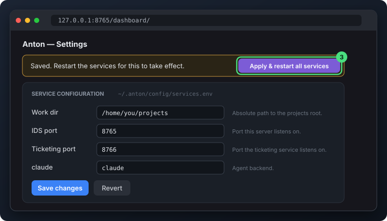
The same section holds the ports and the claude, opencode
and git commands. It saves them to
~/.anton/config/services.env, which the services read at start and
upgrades keep. Prefer the terminal? Re-running the installer with
--work-dir does the same:
curl -fsSL https://saadhu-xyz.github.io/install-linux.sh | bash -s -- --work-dir ~/projectsShow the pairing QR and scan it from the app. Your phone then shows a six-character code while it waits — approve that code on the server, only if it matches.
anton --print-pairing-qr # show the QR
anton --approve-device <code> # approve the code on the phone
anton --list-devices # see who's paired
You can also approve it under Devices in the settings dashboard, or from a
phone that's already approved. Revoke one any time with
anton --revoke-device.
The worker clones, branches and pushes with its own SSH key, not yours. Until GitHub knows that key, every ticket fails at the clone.
git@github.com:you/repo.git.That's it — create a project and start a live session, or file your first ticket. Back to Anton →